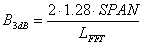

Frequency Settings and Resolution Bandwidth
The most important FFT spectrum analyzer settings are:
- The "Frequency Span" (SPAN) defines the useful bandwidth.
- The "FFT Length" (LFFT) defines the number of raw samples.
The frequency resolution is commonly expressed in terms of the "Resolution Bandwidth" (RBW): The smaller the RBW, the finer the frequency resolution. For the Gaussian window, the following relation holds:

This equation results in the following table for the supported frequency spans and FFT lengths. Combinations with the same ratio of SPAN / LFFT have the same RBW.
RBW in Hz with Gaussian window (α = 3.8)
SPAN | LFFT = 1024 (1k) | LFFT = 2048 (2k) | LFFT = 4096 (4k) | LFFT = 8192 (8k) | LFFT = 16384 (16k) |
|---|---|---|---|---|---|
40 MHz | 1.00E+05 | 5.00E+04 | 2.50E+04 | 1.25E+04 | 6.25E+03 |
20 MHz | 5.00E+04 | 2.50E+04 | 1.25E+04 | 6.25E+03 | 3.13E+03 |
10 MHz | 2.50E+04 | 1.25E+04 | 6.25E+03 | 3.13E+03 | 1.56E+03 |
5 MHz | 1.25E+04 | 6.25E+03 | 3.13E+03 | 1.56E+03 | 7.81E+02 |
2.5 MHz | 6.25E+03 | 3.13E+03 | 1.56E+03 | 7.81E+02 | 3.91E+02 |
1.25 MHz | 3.13E+03 | 1.56E+03 | 7.81E+02 | 3.91E+02 | 1.95E+02 |